Hands-on · Redaktion
Schritt für Schritt mit Bildern: anmelden, News schreiben, Verbandsanlässe ausschreiben, Bilder und Galerien pflegen.
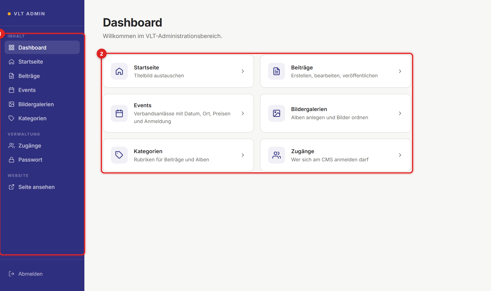
01 · Erste Schritte
Auf der Website oben rechts Login klicken – oder direkt /admin/login aufrufen.
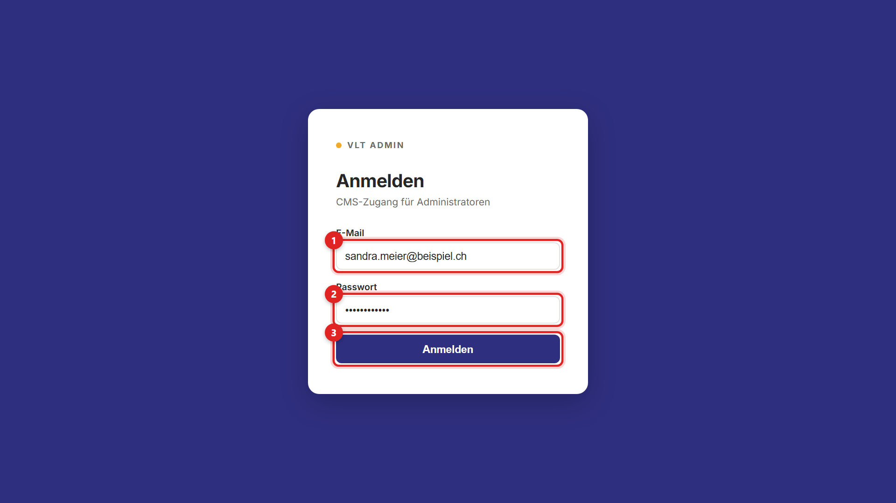
Das CMS verlangt sofort ein eigenes Passwort (mindestens 12 Zeichen). Vorher ist nichts anderes freigeschaltet.
Solange Sie angemeldet sind, steht oben auf der Website Admin statt Login.
01 · Erste Schritte
Nach dem Anmelden landen Sie hier. Links ist immer die Seitenleiste, rechts der Arbeitsbereich.
Die Website-Adresse (z. B. /events/weiterbildungstag-2026) wird aus dem Titel gebildet. Sie müssen nichts eintragen.
02 · Startseite
In der Seitenleiste Startseite öffnen. Die blaue Fläche ist eine Vorschau des Kopfbereichs der Website.
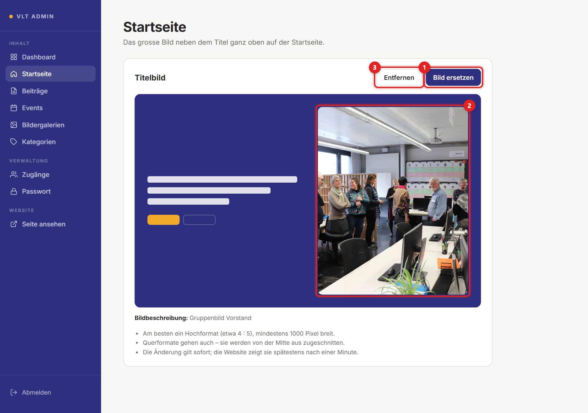
Am besten ein Hochformat (etwa 4 : 5), mindestens 1000 Pixel breit. Querformate werden von der Mitte aus zugeschnitten – Köpfe am Rand können wegfallen.
02 · Startseite
Spätestens eine Minute nach dem Speichern steht das neue Bild auf der Startseite.
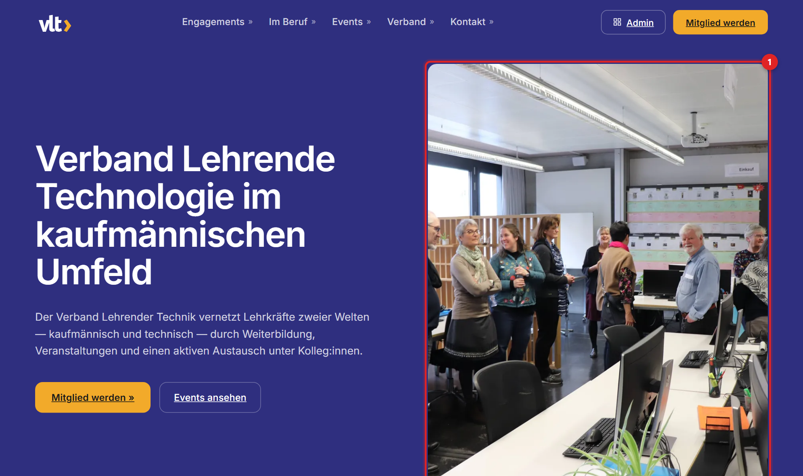
03 · News
Beiträge sind die News des Verbands – auf der Website unter Verband → News.
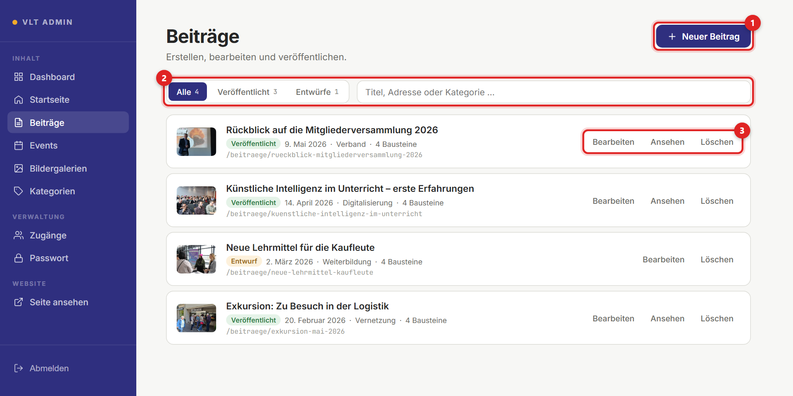
03 · News
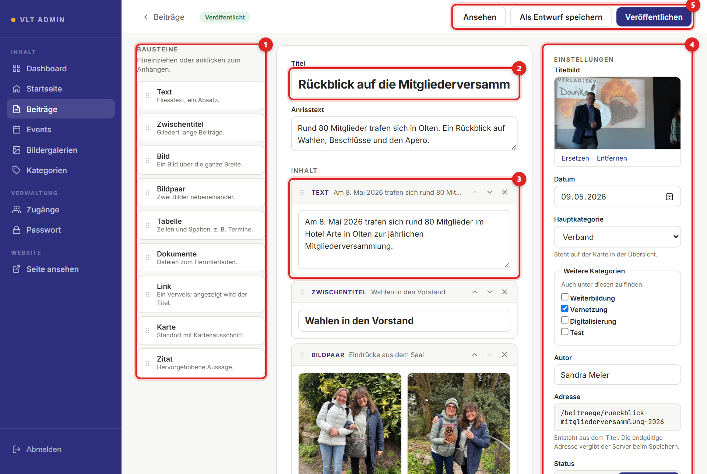
Steht das oben neben dem Status, sind Änderungen offen. Erst speichern, dann die Seite verlassen.
04 · Inhalt
Jeder Baustein ist ein Abschnitt auf der Seite. Die Gestaltung übernimmt die Website – Sie liefern nur Text und Bilder.
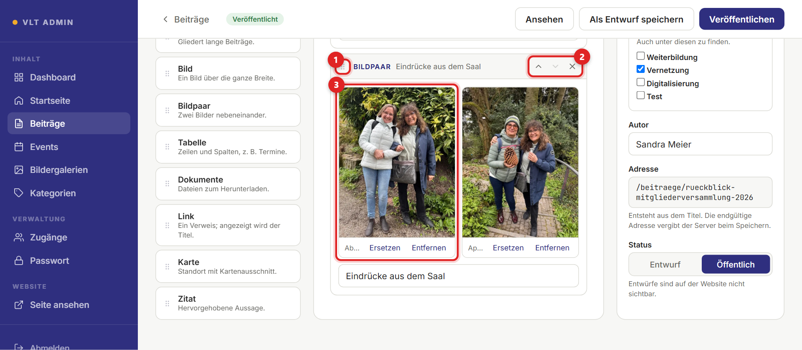
| Baustein | Wofür | Baustein | Wofür |
|---|---|---|---|
| Text | Ein Absatz Fliesstext | Tabelle | z. B. ein Programm; Kopfzeile möglich |
| Zwischentitel | Gliedert lange Texte | Dokumente | PDF, Word, Excel zum Herunterladen |
| Bild | Ein Bild, ganze Breite | Link | Verweis auf eine Seite |
| Bildpaar | Zwei Bilder nebeneinander | Zitat | Hervorgehobene Aussage |
Ein Baustein ohne Inhalt wird beim Speichern gemeldet («Diese Bausteine sind noch leer: 3»). Füllen oder mit ✕ entfernen.
05 · Events
Events öffnen, Neues Event klicken, Titel eintragen. Darunter stehen die Eckdaten – das, was Besucher suchen.
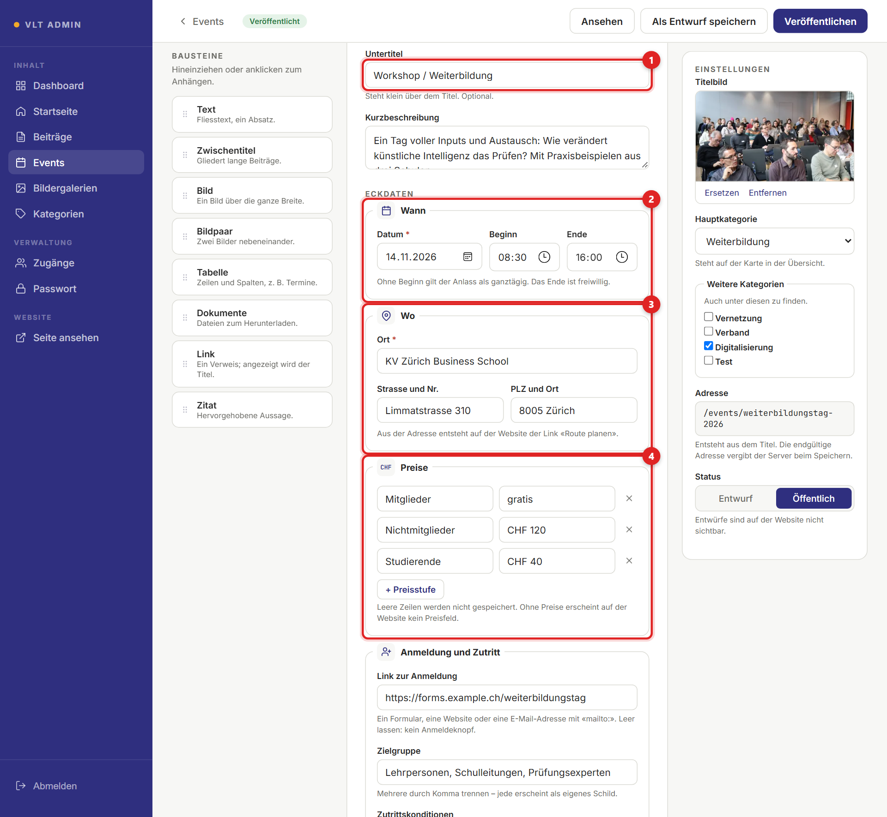
05 · Events
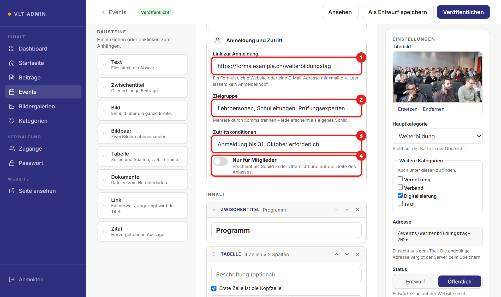
mailto:anmeldung@…. Leer = kein Anmeldeknopf.Unter Inhalt folgen Programm, Referenten oder Unterlagen als Bausteine. Rechts Titelbild und Kategorie wählen, dann Veröffentlichen.
«Das Ende muss nach dem Beginn liegen» – Uhrzeiten prüfen. «Preis 2 braucht eine Bezeichnung und einen Betrag» – die Zeile ganz ausfüllen oder ganz leeren.
05 · Events
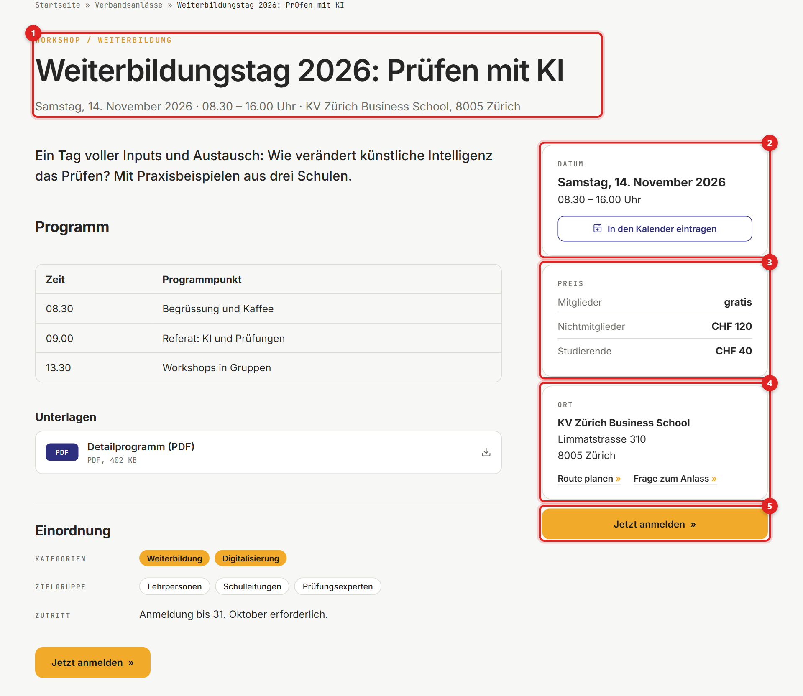
Kommende Anlässe stehen oben (der nächste hervorgehoben), vergangene darunter; die drei nächsten auch auf der Startseite. Nach dem Datum verschwinden Anmeldeknopf und Kalendereintrag automatisch.
06 · Fotos
Bildergalerien öffnen, Neues Album klicken, Titel und kurzen Anrisstext eintragen.
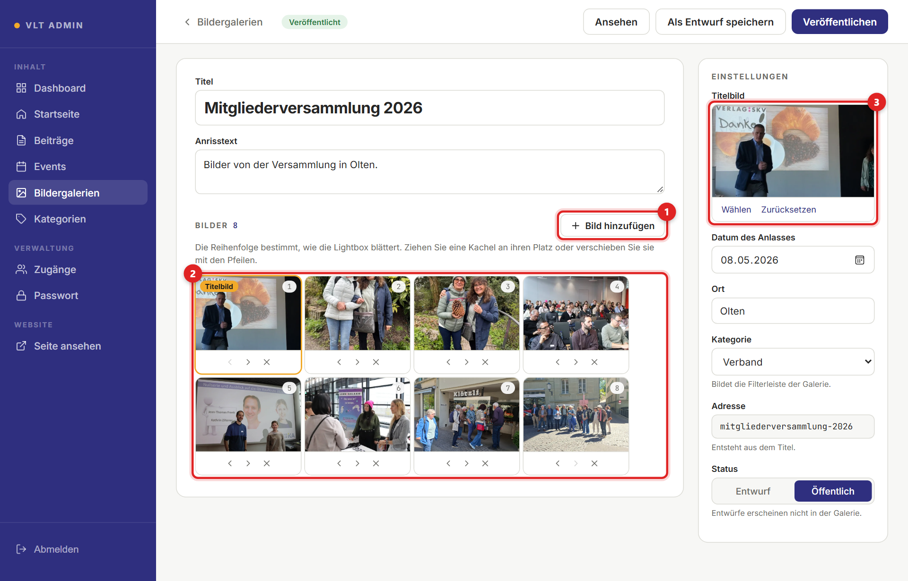
07 · Dateien
Überall, wo Sie ein Bild oder Dokument wählen, öffnet sich dieses Fenster.
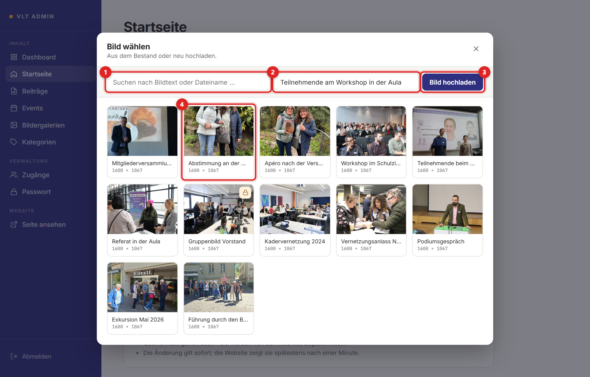
| Art | Erlaubt |
|---|---|
| Bilder | JPG, PNG, WebP, GIF – bis 8 MB |
| Dokumente | PDF, Word, Excel, PowerPoint – bis 20 MB |
Sie wird Menschen vorgelesen, die nicht sehen können. Kurz und konkret: «Teilnehmende am Workshop in der Aula» statt «IMG_4021».
08 · Verwaltung
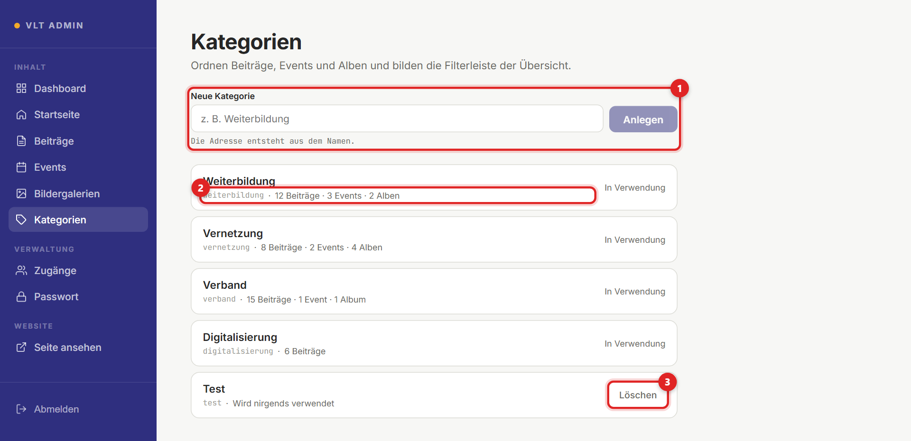
08 · Verwaltung
Wer sich am CMS anmelden darf. Jede Person bekommt einen eigenen Zugang.
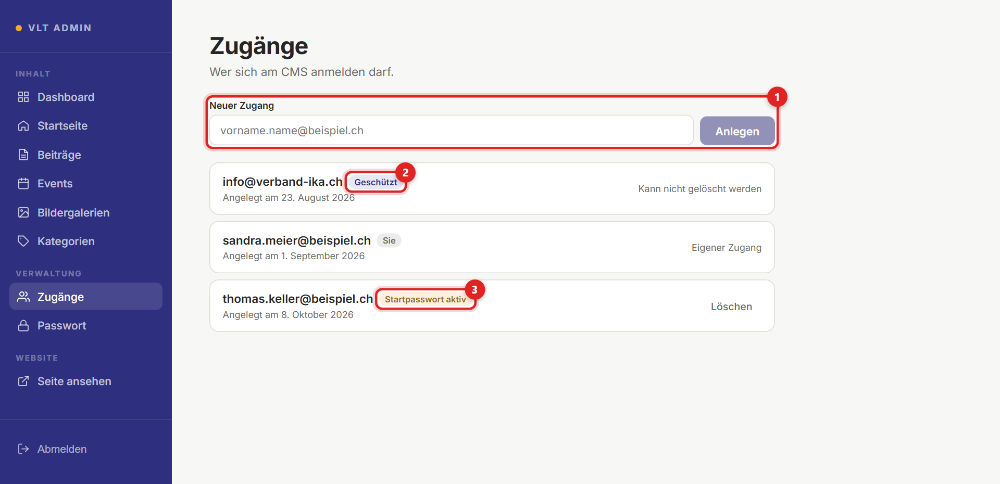
Jede Person bekommt einen eigenen Zugang – Passwörter nie teilen. Das Startpasswort persönlich weitergeben, nicht per Gruppenchat.
09 · Hilfe
Die Website zeigt Neues nach spätestens einer Minute. Und: Steht der Status auf Öffentlich?
Jeder Eintrag braucht einen Titel – Events zusätzlich Datum und Ort.
Es wird noch verwendet. Die Meldung nennt die Stellen – dort zuerst ein anderes Bild einsetzen.
Einfach neu anmelden. Darum: lieber zwischendurch als Entwurf speichern.
Bei der Person melden, die die Zugänge verwaltet. Sie löscht Ihren Zugang und legt ihn mit einem neuen Startpasswort wieder an.
☐ Titel und Kurzbeschreibung ohne Tippfehler
☐ Titelbild gesetzt, Bilder haben Beschreibungen
☐ Bei Events: Datum, Zeit, Ort, Preise und Anmeldelink kontrolliert
☐ Nach dem Veröffentlichen mit Ansehen auf der Website prüfen – auch auf dem Handy
Die Screenshots zeigen Beispieldaten. Stand: Oktober 2026